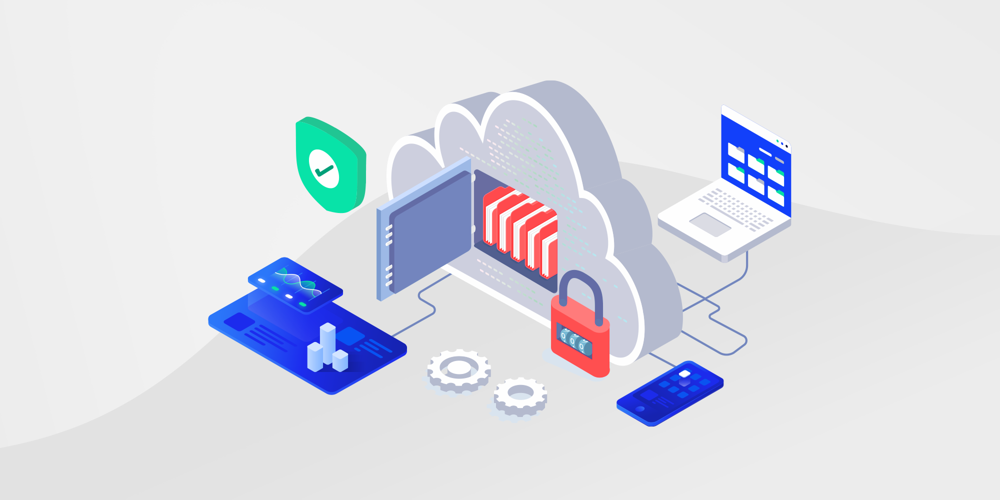

Cloud Computing Security Standards
Introduction
The term cloud computing encompasses a variety of systems, technologies, service and deployment models, as well as business models, as described in the SP 800-146 document. Although it offers benefits such as elasticity, rapid provisioning and release of resources, and network accessibility, it also involves specific security risks depending on the type of cloud and the deployment model adopted. The adoption of solutions that address these risks is key to accelerating the use of cloud services.
Risk Management and Security
Risk management and the implementation of traditional security measures, such as cryptography, identity management, and vulnerability analysis, are essential to mitigate threats in the cloud environment. However, these measures need to be adapted to the specifics of each cloud model to ensure the confidentiality, integrity, and availability of the stored and processed information.

Security Challenges in Cloud Computing
- Commitments to data confidentiality and integrity in transit and at rest.
- Attacks leveraging the homogeneity of cloud systems to scale quickly.
- Unauthorized access by consumers through exploitation of vulnerabilities.
- Limitations in encrypting data in multi-tenancy environments.
- Lack of standardization in APIs that hinders migration between cloud providers.
- Attacks exploiting known vulnerabilities in outdated virtual machines.
- Abuse of internal privileges by cloud provider personnel.
- Interception of data in transit (man-in-the-middle attacks).
Security Objectives
Cloud solution implementers must focus on protecting consumer data against unauthorized access, implementing access controls, and ensuring the logical separation of resources. Additionally, they should include intrusion detection and prevention solutions, define trust boundaries between providers and consumers, and use standardized APIs to facilitate the interoperability and portability of cloud services.
